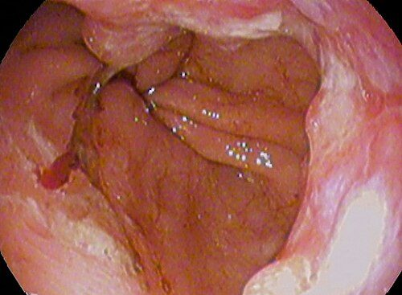

Información divulgativa. No sustituye la valoración de tu equipo médico ni sirve para decidir un tratamiento.


En resumen
| Frecuencia | Unos 510.000 casos al año en el mundo (GLOBOCAN 2022) y unos 2.400 en España |
| Tipos | Carcinoma epidermoide (tabaco, alcohol) y adenocarcinoma (reflujo, esófago de Barrett, obesidad) |
| Señal principal | Dificultad para tragar que avanza, primero con sólidos y luego con líquidos, y pérdida de peso |
| Diagnóstico | Gastroscopia con biopsia; TC y PET-TC para el estadio |
| Tratamiento | Quimioterapia o quimiorradioterapia seguidas de cirugía; quimiorradioterapia sola en algunos epidermoides; inmunoterapia en casos seleccionados |
| Supervivencia | 13 % en hombres y 16 % en mujeres a cinco años en España (supervivencia neta, diagnosticados en 2008-2013, REDECAN) |
Qué es
El esófago es el tubo que lleva los alimentos de la garganta al estómago. Su cáncer tiene dos tipos con causas, localización y tratamiento distintos:
- Carcinoma epidermoide (o escamoso): aparece sobre todo en los tercios superior y medio. Está ligado al tabaco, al alcohol y a las bebidas muy calientes. Es el tipo más frecuente en el mundo, sobre todo en Asia y África oriental.
- Adenocarcinoma: aparece en el tercio inferior, a menudo a partir del esófago de Barrett, un cambio de la mucosa causado por el reflujo crónico. Está ligado a la obesidad y es el tipo que más ha aumentado en Europa y Norteamérica.
Los tumores de la unión con el estómago se tratan de forma parecida al cáncer de estómago. Para comparar ambos órganos, ver Cáncer de estómago y esófago.
Cuántos casos hay
Es menos frecuente que el de estómago, pero de los más mortales, porque suele dar síntomas cuando ya está avanzado. En España se diagnostican unos 2.400 casos al año, sobre todo en hombres.
Factores de riesgo
| Factor | Epidermoide | Adenocarcinoma |
|---|---|---|
| Tabaco | Muy importante | Sí |
| Alcohol | Muy importante, y multiplica el efecto del tabaco | Poco |
| Reflujo y esófago de Barrett | No | Principal |
| Obesidad | No | Sí |
| Otros | Bebidas muy calientes, acalasia, cáusticos, tilosis (rara) | Varón, raza blanca |
Prevención
- No fumar y limitar el alcohol: es la medida más eficaz frente al epidermoide.
- Controlar el peso y tratar el reflujo persistente.
- Las personas con esófago de Barrett siguen gastroscopias periódicas. Si aparece displasia, se puede tratar por endoscopia (ablación o resección) antes de que se convierta en cáncer.
Síntomas
- Disfagia: dificultad para tragar, con sensación de que la comida se queda atascada. Primero con sólidos y después con líquidos.
- Pérdida de peso sin motivo.
- Dolor detrás del esternón al tragar, ardor persistente.
- Ronquera, tos al comer o neumonías repetidas en la enfermedad avanzada.
La dificultad para tragar que no se explica merece una consulta pronto, aunque sea leve. Ver Síntomas que no hay que ignorar.
Diagnóstico
- Gastroscopia con biopsia.
- TC de tórax y abdomen y PET-TC para el estadio.
- Ecoendoscopia para ver la profundidad y los ganglios.
- En tumores del tercio superior, broncoscopia y exploración de la garganta.
- Biomarcadores en la enfermedad avanzada: PD-L1, HER2 (en el adenocarcinoma) e inestabilidad de microsatélites.
Tratamiento
Tumores muy precoces: resección por endoscopia.
Tumores localizados: - Adenocarcinoma: quimioterapia FLOT antes y después de la cirugía, preferida tras el ensayo ESOPEC, o quimiorradioterapia (esquema CROSS) seguida de cirugía. - Epidermoide: quimiorradioterapia seguida de cirugía o, en algunos pacientes, quimiorradioterapia definitiva con vigilancia estrecha. - Esofagectomía, a menudo mínimamente invasiva, en centros de alto volumen. - Si después de la quimiorradioterapia y la cirugía queda tumor, nivolumab durante un año (ensayo CheckMate 577).
Enfermedad avanzada: - Quimioterapia con platino y fluoropirimidina, más nivolumab o pembrolizumab según PD-L1. - Trastuzumab en adenocarcinomas HER2 positivos. - Para poder tragar: prótesis (stent), radioterapia o braquiterapia, y apoyo nutricional.
Pronóstico
Depende sobre todo del estadio en el momento del diagnóstico. Los tumores detectados muy pronto, a menudo durante el seguimiento de un esófago de Barrett, tienen buen pronóstico. En conjunto, en España sobrevive a cinco años el 13 % de los hombres y el 16 % de las mujeres (supervivencia neta, diagnosticados en 2008-2013, registros de REDECAN). Son cifras de hace años, anteriores a los tratamientos actuales, y no predicen un caso concreto.
Después del tratamiento
Tras una esofagectomía hay que comer poco y a menudo, despacio y sentado, no tumbarse después de comer y dormir con la cabecera elevada. Son frecuentes el reflujo, la dificultad para tragar por estrechez de la sutura (se trata con dilataciones) y la pérdida de peso. Un dietista-nutricionista y un logopeda pueden ayudar.
Preguntas para tu equipo
- ¿Es un epidermoide o un adenocarcinoma?
- ¿Me recomiendan quimioterapia o quimiorradioterapia antes de la cirugía?
- ¿Es posible no operarme?
- ¿Cuántas esofagectomías hace el hospital al año?
- ¿Cómo me alimentaré durante el tratamiento?
Ver también: Cáncer de estómago, Cáncer de cabeza y cuello, Tabaco, alcohol y otros riesgos.
Fuentes
- Obermannová R, et al. Oesophageal cancer: ESMO Clinical Practice Guideline. Ann Oncol. 2022;33:992-1004. doi:10.1016/j.annonc.2022.07.003
- Hoeppner J, et al. Perioperative chemotherapy or preoperative chemoradiotherapy in esophageal cancer (ESOPEC). N Engl J Med. 2025;392:323-335. doi:10.1056/NEJMoa2409408
- van Hagen P, et al. Preoperative chemoradiotherapy for esophageal or junctional cancer (CROSS). N Engl J Med. 2012;366:2074-2084. doi:10.1056/NEJMoa1112088
- Kelly RJ, et al. Adjuvant nivolumab in resected esophageal or gastroesophageal junction cancer (CheckMate 577). N Engl J Med. 2021;384:1191-1203. doi:10.1056/NEJMoa2032125
- SEOM y REDECAN. Las cifras del cáncer en España 2025 (supervivencia neta a cinco años, 2008-2013). seom.org
- Bray F, et al. Global cancer statistics 2022: GLOBOCAN. CA Cancer J Clin. 2024;74:229-263. doi:10.3322/caac.21834
Guías y documentos recientes (2024-2026)
- SEOM y REDECAN. Las cifras del cáncer en España 2026. Madrid: SEOM; 2026. seom.org
- Al-Batran SE, et al., on behalf of the ESMO Guidelines Committee. Gastric and oesophageal cancer: ESMO Clinical Practice Guideline for diagnosis, treatment and follow-up. Ann Oncol. 2026. esmo.org
- ESMO Guidelines Committee. ESMO Clinical Practice Guideline interim update on the management of oesophageal cancer. ESMO Open. 2025;10:104134. esmo.org
- Immunotherapy and targeted therapy for advanced gastroesophageal cancer: ASCO guideline update. J Clin Oncol. 2026. PubMed
Fuentes revisadas y actualizadas en noviembre de 2026.